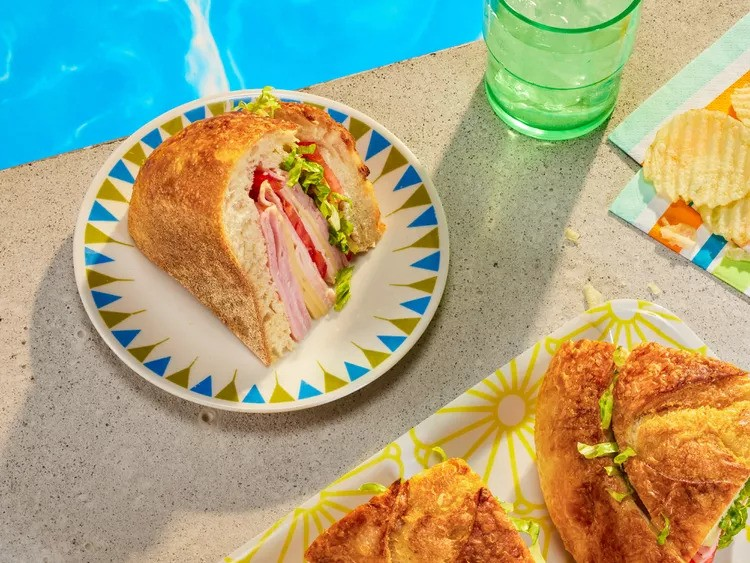

Pool Sandwich

Description
A pool sandwich is a popular snack enjoyed poolside, typically made with light, fresh ingredients. It usually includes cold cuts like turkey or ham, paired with crisp lettuce, juicy tomatoes, and cheese, all layered between slices of bread or a soft roll. Sometimes, it's topped with condiments like mayonnaise or mustard. The pool sandwich is designed to be quick, easy, and refreshing, making it the perfect casual meal during a day of swimming and sunbathing.
Ingredients
- Bread
- Butter
- Yellow mustard
- Iceberg lettuce
- Sliced deli ham
- Sliced deli turkey
- Swiss cheese
- Cheddar cheese
Steps
- Preheat the oven to 350 degrees F (175 degrees C).
- Cut a wide circle out of the bread loaf top like you’re making a soup bread bowl. Carefully remove and set aside the loaf top.
- Hollow out the bread interior, being careful not to break through the sides. The loaf interior can be used to make croutons, so there’s no waste.
- Melt butter with mustard in the microwave for 15 seconds in a small bowl. Mix well.
- Brush butter mixture onto the exterior of the bread loaf and top; place loaf and top on a baking sheet.
- Bake in the preheated oven for 10 minutes. Let cool.
- Pat lettuce dry and place a layer in the bottom of the hollowed-out loaf. Layer cheese over lettuce. Add a layer of ham and turkey. Repeat until the loaf is full. Top with reserved bread top.
- Wrap sandwich in plastic wrap and put on a baking sheet. Place another baking sheet on top with something to weigh it down.
- Place the completed sandwich on the baking sheet in the refrigerator for at least 1 hour or overnight.
- Keep the sandwich whole or cut it into easy triangular sections.